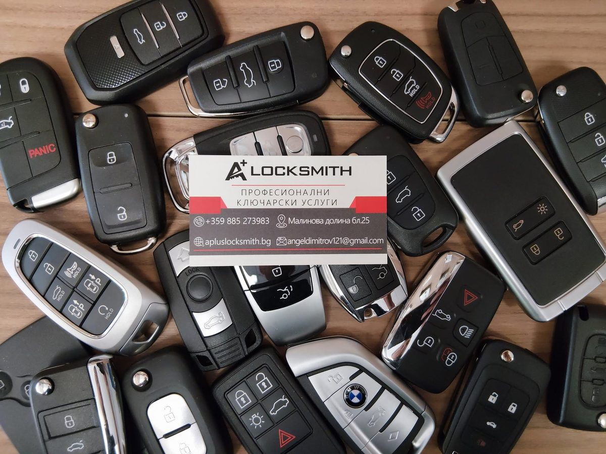

Как се прави ключ за кола — всичко което се случва зад кулисите
Металното острие е само началото. Зад всеки автомобилен ключ стои електроника, криптиране и комуникация с имобилайзера — без която двигателят не пали.

Изработката на ключ за кола не прилича на нищо, което се случва в железарията. Металното острие е само видимата част — зад него стои процес, в който участват чипове, криптирани протоколи и електроника, специфична за всеки автомобил.
Стъпка 1: острието
Физическото рязане на металното острие е началото. То се изработва по заводски код на автомобила — не по копие на съществуващ ключ — за да се гарантират точните фабрични размери на резките. Резултатът отваря механичния патрон на вратата и контакта.
Стъпка 2: транспондерът
В дръжката на всеки съвременен автомобилен ключ има чип — транспондер. При пускане на ключа в контакта той изпраща криптиран сигнал към имобилайзера на колата. Ако сигналът не съвпада, двигателят не пали — независимо дали острието пасва перфектно.
Стъпка 3: кодирането
Новият транспондер трябва да бъде кодиран към конкретния автомобил. Това се прави с диагностично оборудване, което комуникира директно с имобилайзера. При по-новите системи — като BDC или последните поколения на Volkswagen Group — процесът включва и криптирани протоколи с допълнителна защита.
Стъпка 4: проверката
След кодирането следва проверка на място — двигателят трябва да пали стабилно, дистанционното да заключва и отключва, а при смарт ключове — системата да разпознава ключа безжично без прекъсвания.
Имате подобен случай?
Обадете се за оглед или консултация — работим в София с посещение на адрес.